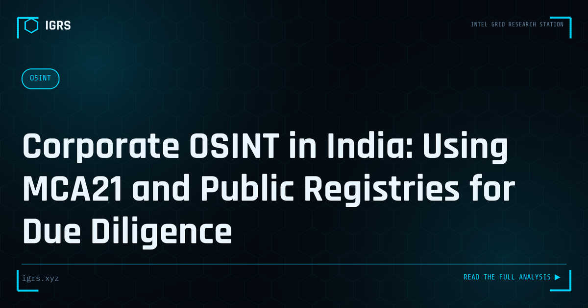

Corporate OSINT in India: Using MCA21 and Public Registries for Due Diligence
| File No. | IGRS-034/2026 |
| Subject | Guide to open-source corporate intelligence using Indian regulatory databases |
| Category | OSINT Fundamentals |
| Author | Manuj Kumar Pandey |
| Published | 2026-06-01 |
| Reading time | 12 minutes |
Indian regulatory databases contain rich corporate intelligence that most investigators underuse. How to extract maximum value from MCA21, SEBI, and other public registries.
Corporate OSINT: Investigating Companies
Investigating companies — for due diligence, fraud detection, competitive intelligence, or litigation — is a core OSINT discipline. Corporate OSINT uses public records, registries, and online sources to understand a company's ownership, operations, finances, and relationships. For Indian investigators, mastering corporate research using both Indian and international sources is essential. This guide covers corporate OSINT methodology and resources.
Why Investigate Companies
Corporate investigation serves many purposes: verifying that a company is legitimate before a transaction, conducting due diligence on partners or acquisitions, investigating fraud and shell companies, mapping corporate relationships and beneficial ownership, and supporting litigation. In each case, the goal is to move beyond what a company claims about itself to what public records and evidence actually reveal, exposing risks and relationships that may not be apparent on the surface.
Key Indian Resources
| Resource | Information |
|---|---|
| MCA21 portal | Company registration, directors, filings |
| GST portal | GST registration verification |
| Company filings | Financials, annual returns |
| Court records | Litigation history |
The MCA21 Portal
For Indian companies, the Ministry of Corporate Affairs MCA21 portal is the foundational resource. It provides company registration details, the names of directors, incorporation information, and access to filed documents including financial statements and annual returns. Examining MCA21 data reveals who controls a company, its financial position, and its compliance history — the starting point for most Indian corporate investigations.
Mapping Ownership and Directors
Understanding who controls a company is central to corporate OSINT. Director information from MCA21 can be cross-referenced to reveal individuals who control multiple companies, networks of related entities, and beneficial ownership behind corporate structures. For fraud and shell company investigation, this mapping exposes the people behind entities and reveals networks that may indicate coordinated activity, hidden control, or attempts to obscure ownership.
International Corporate Research
Many investigations cross borders, requiring international resources. Global registries and aggregators like OpenCorporates compile company data from many jurisdictions, while individual countries maintain their own registries. For investigations involving foreign entities, offshore structures, or international relationships, combining Indian sources with international registries and leak databases provides the broader picture needed to understand complex corporate structures.
Verifying Legitimacy
A common investigative goal is verifying whether a company is genuine. Indicators of a legitimate operation include consistent registration and filing history, identifiable real directors and operations, a credible online and physical presence, and verifiable financials. Red flags include recent incorporation with no track record, directors linked to many entities, mismatched or missing filings, and an absence of genuine operations — patterns that may indicate a shell company or fraud.
Building Corporate OSINT Skills
For Indian investigators, corporate OSINT combines mastery of Indian resources like MCA21 and GST verification with international registries and broader research techniques. By systematically examining registration, ownership, financials, litigation, and online presence, investigators build a comprehensive, evidence-based understanding of any company — verifying legitimacy, exposing fraud, and mapping relationships. As corporate fraud, shell companies, and complex ownership structures feature in many investigations, the ability to research companies thoroughly using public records is among the most valuable and widely applicable OSINT skills, supporting due diligence, fraud investigation, and litigation alike.